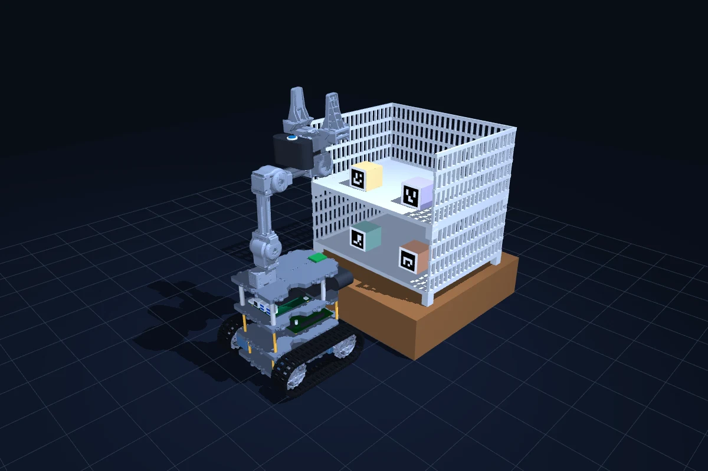

DESKTOP / LOCAL PYTHON
OMX MuJoCo.
같은 디자인, 두 가지 장면.
PC의 MuJoCo 창에서 관절을 조작하고
시뮬레이션을 살펴보세요.

01 / KINEMATIC DISPLAY
선반 디지털 트윈
웹과 동일한 원본 로봇·선반·ArUco 4개. 관절과 그리퍼를 직접
조작하는 표시 장면입니다. 중력·충돌·PPO 추론은 실행하지 않습니다.
python scripts/view_twin.py --scene shelf

02 / PHYSICS SANDBOX
기존 배송 시뮬레이션
기존 타워와 상자, 물리·제어 설정을 유지했습니다.
색상·조명·그리드·시점을 통일한 수동 물리 샌드박스입니다.
python scripts/view_twin.py --scene delivery
QUICK START
PC에서 실행하기
Python 3.11 이상과 화면을 표시할 수 있는 PC가 필요합니다. 별도 가상
환경에 뷰어에 필요한 패키지만 설치합니다.
오른쪽 Control에서 관절 목표를 조작합니다.
R 초기화 · 드래그 회전 · 휠 확대.
git clone https://github.com/KweonTJ/omx_train_ws.git
cd omx_train_ws
python -m venv .venv-twin
# Linux / macOS
source .venv-twin/bin/activate
# Windows: .venv-twin\Scripts\activate
python -m pip install mujoco numpy
python scripts/view_twin.py --scene shelf